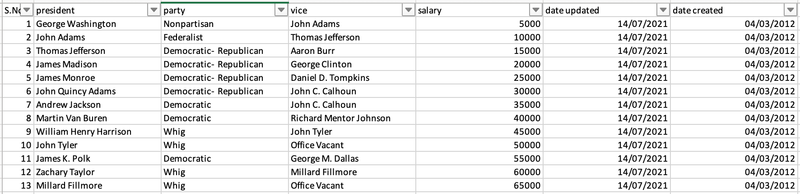
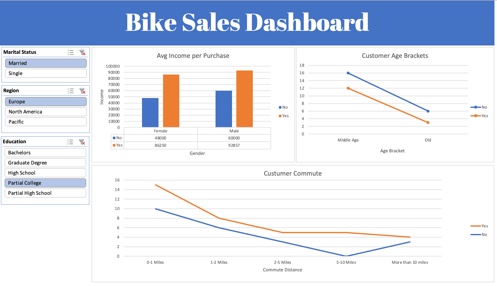

Cleaning Data in Excel (US President Dataset)

Identify Data Issues: Carefully review your data to identify common issues such as missing values, duplicate entries, inconsistent formatting, and incorrect data.
Remove Duplicates: Use the "Remove Duplicates" feature under the "Data" tab to eliminate duplicate rows based on selected columns. This helps prevent double-counting and maintains data integrity.
Handling Missing Values: Identify and handle missing values. Either delete rows with missing values, replace them with a placeholder (e.g., "N/A").
Text to Columns: If data is not properly formatted (e.g., combined first and last names in a single column), "Text to Columns" feature under the "Data" tab can be used to split the data into separate columns based on a delimiter.
Correcting Data Formats: Ensure that data is formatted correctly. For example, dates should be in the same format (e.g., MM/DD/YYYY), and numeric data should have consistent decimal places.
Find and Replace: Use the "Find and Replace" tool to search for specific text or characters and replace them with desired values. This is useful for correcting typos and standardizing values.
Trim Spaces: Extra spaces before or after data can lead to inconsistencies. Use the "TRIM" function to remove extra spaces.
Convert Data Types: Ensure that data is in the correct data type (numeric, date, text, etc.) by using the "Text to Columns" tool to split data into separate columns if needed.
Check for Outliers:Use visualization tools (e.g., histograms, box plots) to identify outliers and decide whether outliers should be removed, transformed, or kept based on the context of the data.
After Data CleaningBike Sale Project
Employing the find and replace function to modify marital status from "M" to "married" and "S" to "Single," along with transforming Gender Column F to "Female" and "M" to "Male," to enhance data analysis within Excel.
Convert the income column to currency format and categorize the age column into adolescence, old age, and middle age using the find and replace function.

Construct a pivot table utilizing the refined dataset. Generate a visual chart representing various age brackets, average income per purchase, and the commuting distance of customers. Establish descriptive headers for the dashboard components. Subsequently, incorporate Slicers by selecting marital status, region, and education options to facilitate dynamic filtering and analysis.
Bicycle sale involving married individuals in Europe and during their college years.View Full Project in GitHub